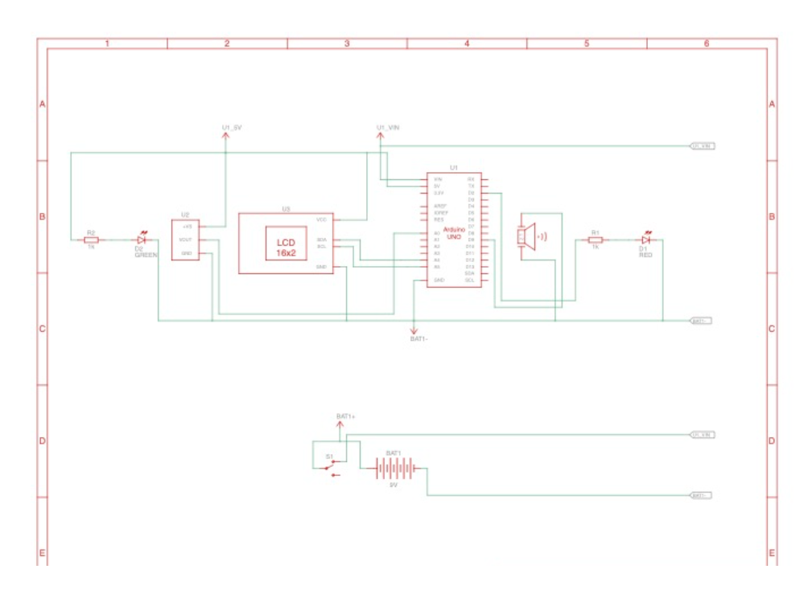

%% Room Temperature Monitor %%
Overview
This room temperature monitor, built for EK131, uses an Arduino Uno to display temperature readings and trigger alerts when the room temperature falls outside a set range (20–25°C). The system includes a green/red LED, a Piezo buzzer that plays a melody, and a 16x2 I2C LCD screen.
Functionality
The TMP36 sensor provides analog voltage values, which are converted to temperature using Arduino code. The LCD updates every 1–2 seconds. If the temperature is too hot or cold, a red LED blinks and the buzzer plays the Star Wars theme. If in range, a green LED remains on.
Design Features
Powered by a 9V battery and housed in a custom enclosure with a 3D-printed battery holder, the circuit uses durable wiring (soldering, shrink wrap, and spade connectors) for reliability. A two-way switch enables power control, and standard 1kΩ resistors protect the LEDs.


Limitations
The 9V battery provides only ~5.6 hours of operation, making long-term use impractical without external power. The enclosure is also bulky, which could limit placement in small spaces or pet enclosures.
Key Takeaways
The prototype accurately monitors and displays room temperature, functioning like a smart alert system. Improvements could include reducing size and switching to a longer-lasting power source such as USB power or rechargeable Li-ion battery packs.